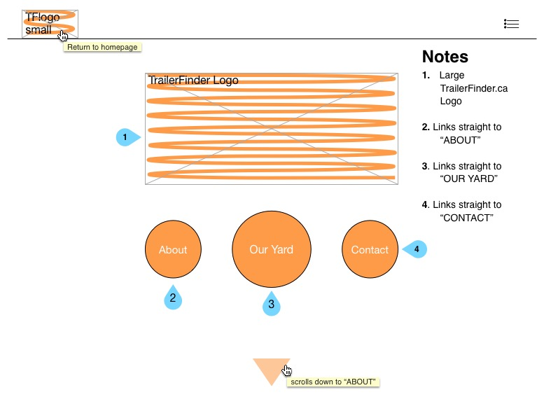

The focal point of this page is intended to be the Trailer Finder Logo, so it is large, centered, and orange on a white background. Hierarcically speaking, the second focal point would be just below the logo in the form of the our yard page button as it is larger than it's two neighbouring circles. This too displays a stark contrast between the orange positive space and white negative space. Another eye catching feature is the arrow on the bottom, this is intended to draw your eye down, and keep you moving through the site. These will appear throughout the site to guide you where we want you to go. Centering of the Trailer Finder logo, and placing the three circles symmetrically below it create a homepage with a great sense of balance.
The about page uses two columns to organize different pieces of information. It is still a balanced page. This entire site will be balanced and as traditional and straight forward as a cool looking site can be because the target client of this business is a fifty year old man with not much tech exposure. Creating a site that makes it easy to find the information the user wants quickly is the main goal. The focal point in this will be the Alberta provincial border outline as opposed to the text. In this industry it is important for people to know we are Albertans, born and bred. Oil men in this region take great pride in being Albertan, we want to identify with that. Hierarcically, this image carries the most visual weight on the page. The about us box will be above the actual description giving it some hierarchical advantage over the body of text, only to make it as easy as possible for user to follow exactly where they are as they work through the site.

Hierarchy plays more of a role on this page than the others. We want the image of our logo to stick in users minds, so it stands front and center as the focal point. The description of how to navigate the page that displays our companies products is of utmost importance. Due to the fact that North American users are our only target, and they are accustomed to reading top-down, left-right, the instructions land in the top-left corner. They will be largely sized and contrast the background loudly to generate as much attention through content hierarchy as possible. Now that the eye is there, the user can continue browsing the content. Developing a more detailed design that encourages flow throughout the entire inventory would be highly beneficial.

This page is pretty simple. We want the user's attention to be solely on getting in touch with us. The focal point is clearly the contact box. the next most visually weight bearing image, and thus our hierarcical silver medalist, is the Trailer Finder logo in the bottom right. This will take you back to the home page. Now that you have scrolled through the site, there are buttons at the homepage that you can tap to easily shortcut to whichever of the three content pages you want to revisit.